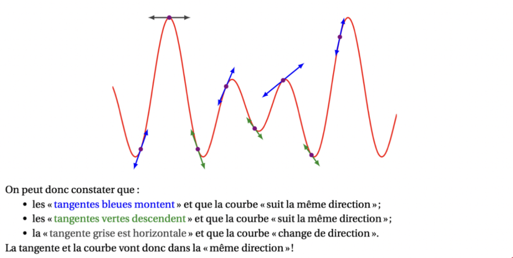
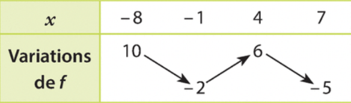

Chapitre 8 - Applications à la dérivation
I - Lien entre signe de la dérivée et variations
C'est l'une des parties les plus importantes de l'année, utile presque tout le temps.
Soit \(f\) une fonction dérivable sur un intervalle \(I\).
- Si \(f'(x) > 0\), alors \(f\) est strictement croissante sur \(I\).
- Si \(f'(x) < 0\), alors \(f\) est strictement décroissante sur \(I\).
- Si \(f'(x) = 0\), alors \(f\) est constante sur \(I\).

Remarque : Pour étudier les variations d'une fonction, on suit toujours les mêmes étapes :
- Calculer la dérivée \(f'(x)\).
- Étudier le signe de \(f'(x)\) (souvent en résolvant une inéquation ou un tableau de signes).
- Dresser le tableau de variations complet avec les flèches.
II - Extremums d'une fonction
Un extremum (maximum ou minimum) correspond à un endroit où la courbe "change de direction".
Théorème : Si \(f\) admet un extremum local en \(x_0\), alors \(f'(x_0) = 0\).
Attention : La réciproque n'est pas toujours vraie. Il faut que la dérivée s'annule ET change de signe pour qu'il y ait un extremum.

III - Méthodologie du Tableau de Variations
Un tableau complet doit faire apparaître :
- Le domaine de définition (les bornes).
- Les valeurs qui annulent la dérivée.
- Le signe de \(f'(x)\) (+ ou -).
- Les flèches de variation de \(f\).
- Les valeurs des extremums (calculées avec \(f(x)\)).